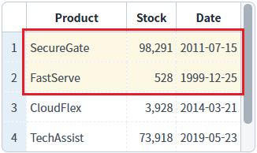
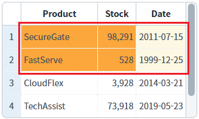
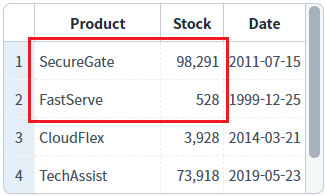
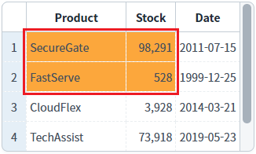

[GridView] 셀의 범위(range) 선택하기
1개요
GridView의 'focusMode' 속성의 설정에 따라, GridView의 'setFocusedMultiCell' 메소드의 호출 결과를 비교한 예제입니다.
2구현된 기능
셀의 범위 선택하기
설정된 FocusMode 무시하고 셀의 범위 선택하기
3예제 테스트 방법
FocusMode 설정별 GridView가 구성되어있습니다. "범위 선택 실행 영역"의 버튼들을 클릭하여 설정별 GridView를 비교합니다.
3.1셀의 범위 선택하기
1
버튼 '행:1, 열:1 ~ 행:2, 열:2'를 클릭합니다.
설정된 FocusMode에 따라 GridView의 1번째 행의 1번째 열(Product) ~ 2번째 행의 2번째 열(Stock) 셀이 선택됩니다. 예제 영역에 구현된 FocusMode별 GridView를 비교합니다.
CASE 1. focusMode : cell
예제 영역 '결과 확인용 GridView - (기본 설정) focusMode : cell'에 구성된 GridView를 확인합니다.
1번째 행의 1번째 열(Product) ~ 2번째 행의 2번째 열(Stock) 셀의 배경색이 변경됩니다.Image 1.브라우저(Chrome) 실행 예시 - focusMode : cell

CASE 2. focusMode : row
예제 영역 '결과 확인용 GridView - focusMode : row'에 구성된 GridView를 확인합니다.
1번째 행의 1번째 열(Product) ~ 2번째 행의 2번째 열(Stock) 셀이 속한 행의 배경색이 변경됩니다.Image 2.브라우저(Chrome) 실행 예시 - focusMode : row

CASE 3. focusMode : both
예제 영역 '결과 확인용 GridView - focusMode : both'에 구성된 GridView를 확인합니다.
1번째 행의 1번째 열(Product) ~ 2번째 행의 2번째 열(Stock) 셀의 배경색과, 셀이 속한 행의 배경색이 변경됩니다.Image 3.브라우저(Chrome) 실행 예시 - focusMode : both

CASE 4. focusMode : none
예제 영역 '결과 확인용 GridView - focusMode : none'에 구성된 GridView를 확인합니다.
셀이 선택되지 않고, 배경색도 변경되지 않습니다.Image 4.브라우저(Chrome) 실행 예시 - focusMode : none

3.2설정된 FocusMode 무시하고 셀의 범위 선택하기
1
버튼 행:1, 열:1 ~ 행:2, 열:2 + ignoreFocusMode 적용 을 클릭합니다.
GridView의 1번째 행의 1번째 열(Product) ~ 2번째 행의 2번째 열(Stock) 셀이 설정된 FocusMode를 무시하고 셀 단위로 선택됩니다.
(FocusMode:none 의 경우는 선택되지 않습니다.)
예제 영역에 구현된 FocusMode별 GridView를 비교합니다.CASE 1. focusMode : cell
예제 영역 '결과 확인용 GridView - (기본 설정) focusMode : cell'에 구성된 GridView를 확인합니다.
1번째 행의 1번째 열(Product) ~ 2번째 행의 2번째 열(Stock) 셀의 배경색이 변경됩니다.Image 5.브라우저(Chrome) 실행 예시 - focusMode : cell

CASE 2. focusMode : row
예제 영역 '결과 확인용 GridView - focusMode : row'에 구성된 GridView를 확인합니다.
'focusMode' 속성을 무시하고 1번째 행의 1번째 열(Product) ~ 2번째 행의 2번째 열(Stock) 셀의 배경색이 변경됩니다.Image 6.브라우저(Chrome) 실행 예시 - focusMode : row

CASE 3. focusMode : both
예제 영역 '결과 확인용 GridView - focusMode : both'에 구성된 GridView를 확인합니다.
'focusMode' 속성을 무시하고 1번째 행의 1번째 열(Product) ~ 2번째 행의 2번째 열(Stock) 셀의 배경색이 변경됩니다.Image 7.브라우저(Chrome) 실행 예시 - focusMode : both

CASE 4. focusMode : none
예제 영역 '결과 확인용 GridView - focusMode : none'에 구성된 GridView를 확인합니다.
셀이 선택되지 않고, 배경색도 변경되지 않습니다.Image 8.브라우저(Chrome) 실행 예시 - focusMode : none
4구현 예시
DataList 생성 및 연결은 생략되었습니다.
4.1셀의 범위 선택하기 - 스크립트
'setFocusedMultiCell' 메소드를 사용하여 스크립트를 작성합니다.
Example 1.Script
//1번째 행 1번째 컬럼 ~ 2번째 행 2번째 컬럼 선택하기 grd_exam1.setFocusedMultiCell(0,0,1,1);
4.2설정된 FocusMode 무시하고 셀의 범위 선택하기 - 스크립트
'setFocusedMultiCell' 메소드를 사용하여 스크립트를 작성합니다.
Example 2.Script
//1번째 행 1번째 컬럼 ~ 2번째 행 2번째 컬럼 선택하기 - 설정된 FocusMode 무시 grd_exam1.setFocusedMultiCell(0,0,1,1,{ignoreFocusMode:true}); //setFocusedMultiCell( startRow , startCol , endRow , endCol ) //startRow : 포커스영역 시작지점의 row값. 즉, 포커스 영역 왼쪽 최상단 셀의 rowIndex. //startCol : 포커스영역 시작지점의 column값. 즉, 포커스 영역 왼쪽 최상단 셀의 colIndex //endRow : 포커스영역 종료지점의 row값. 즉, 포커스 영역 우측 최하단 셀의 rowIndex //endCol : 포커스영역 종료지점 column값. 즉, 포커스 영역 우측 최하단 셀의 colIndex
5주요 API
setFocusedMultiCell( startRow , startCol , endRow , endCol )